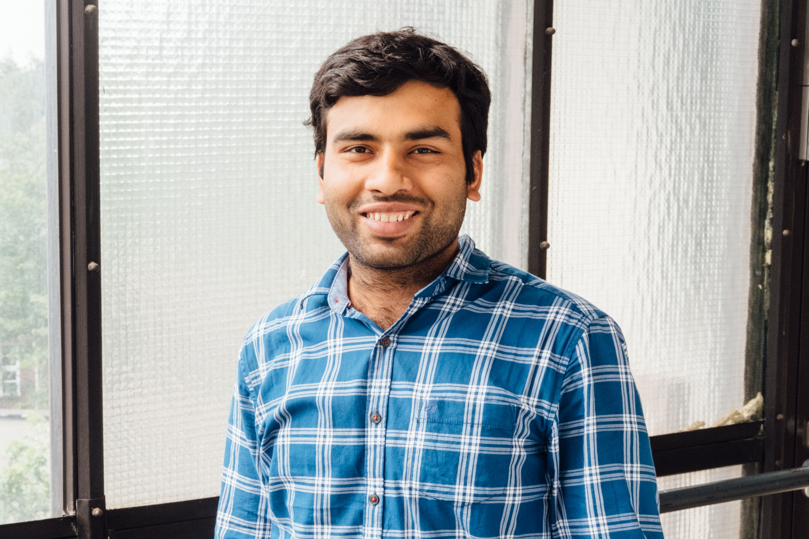

I am a Computational Social Scientist working on user-centered social media, Web Science, and data-driven analysis.
I am currently a PhD student at the University of Duisburg-Essen. My research focuses on understanding and improving social media systems.
Before this, I studied and worked across India, New Zealand, Italy, and Germany. I also worked as an Assistant System Engineer at Tata Consultancy Services.
List your publications here...
Teaching content here...
Add CV details here...